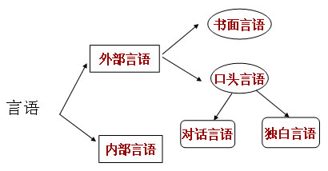

00:00
第四单元 语言与言语
一、语言与言语
1.人们运用语言进行交际的过程叫言语。
2.语言是一种社会现象，是语言学研究的对象；言语是一种心理现象，是心理学研究的对象。
3.语言是以语音或文字为物质外壳，以词为基本单位，以语法为构造规则的符号系统
4.语言是人们进行思维和交际的工具，言语则是人们运用语言交流思想，进行交际的过程。
5.言语需借助语言才能实现，言语离不开语言，借助语言才能实现人们之间的思想交流，而语言也离不开言语。
二、言语活动的形式

03:57
三、言语活动的中枢机制
（一）言语运动中
1.法国医生布洛卡1860年发现左半球额下回靠近外测裂的部位发生病变，导致说话困难，这就是言语运动中枢，也叫布洛卡中枢。
2.此中枢受到损伤表现为说话迟钝费力，不能说出连贯、流畅的语言，但发音器官并没毛病，且病人能听懂别人说的话，还能写字、认字。这叫表达性失语症。
（二）言语听觉中枢
1.1874年，由德国学者威尔尼克发现，位于顶、枕、颞叶交会处的颞上回受到损伤，患者能听到声音，却不能分辨语音，对字词失去理解力。这叫言语听觉中枢，又称威尔尼克中枢。
2.言语听觉中枢受到损伤所发生的失语症（能听无法理解），叫接受性失语症。
（三）视觉性言语中枢
1.位于顶、枕叶交会处的角回是主管阅读的，叫视觉性言语中枢。
2.这一中枢受损，患者能看到字词却无法理解字词的含义，叫失读症。
06:52
（四）书写性言语中枢
1.位于额中回靠中央前回的地方，是主管书写功能的，叫书写性言语中枢。
2.这一中枢受损，患者其它运动机能正常，却不能写字绘画了，叫失写症。
第五单元 想像
一、想象的定义
1.有了表象，人们可以把表象的内容作为素材，在大脑里对这些表象进行加工和改造，进而创造出新的形象；这个过程是一种形象思维的过程。这叫想象。
2.想象与表象
(1)表象：是过去感知过的事物的形象在头脑中的再现，它并没有创造出新的形象，是一种形象记忆的过程，属于记忆的范畴。
(2)想象：是对表象的加工和改造，创造出新的形象，具有创造性，属于思维的范畴。
10:26
二、想象的种类
想象按其是否有意识、有目的，可分为：无意想象、有意想象。
（一）无意想象
无意想象：是没有预定的目的，在某种刺激作用下不由自主产生的想象。
梦是无意想象的一种极端的例子；做梦是没有目的的，是不由意识支配的。
清醒状态下的无意想象更加随心所欲。
幻觉则是在异常精神状态下产生的无意想象。
（二）有意想象
有意想象：是在一定目的、意图和任务的影响下有意识地进行的想象。
可分：创造想象、 再造想象、 幻想。
1.创造想象：不依据现成的描述和图示，独立地创造出新形象的过程，例：作家、画家、服装设计师。
2.再造想象：是根据语言的描述或图表模型的示意，在头脑中形成相应形象的想象。
13:39
3. 幻想：是和一个人的愿望相联系并指向未来的想象。
幻想不是坏事，若只有对未来憧憬而没有实现这愿望的努力，而愿望没有实现的可能，幻想则成了空想。